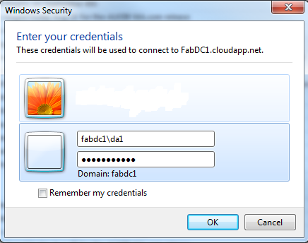
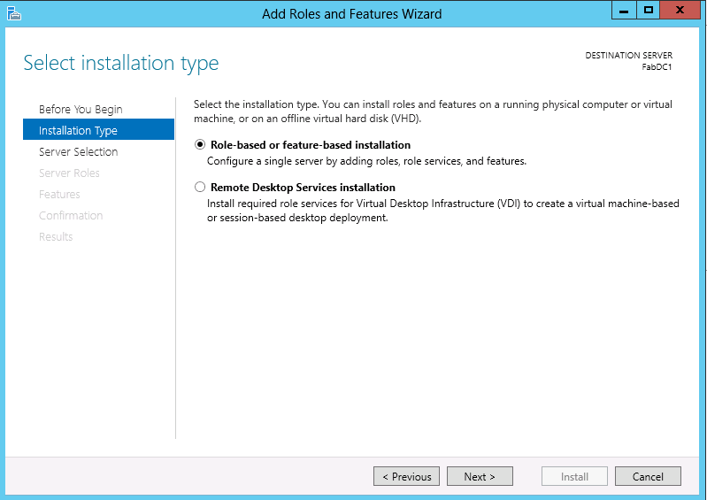
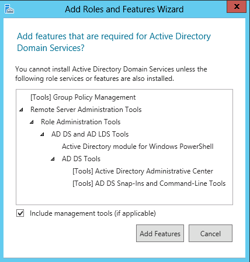
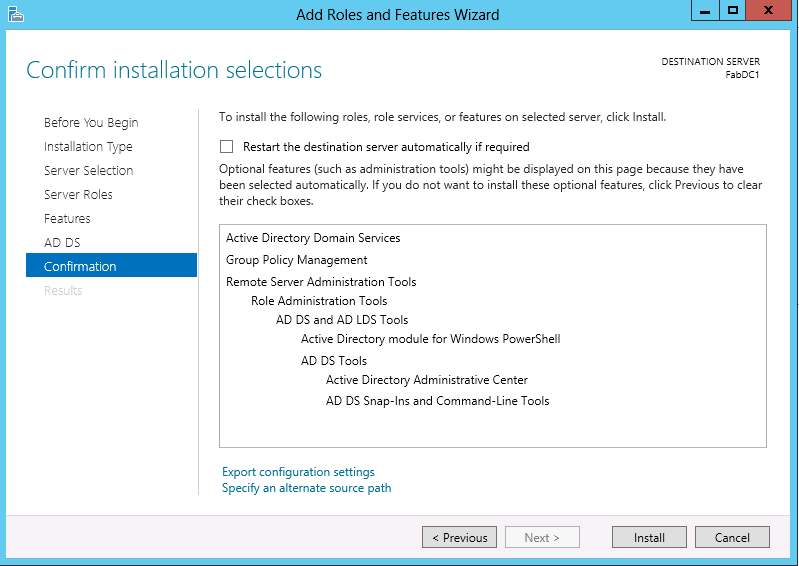
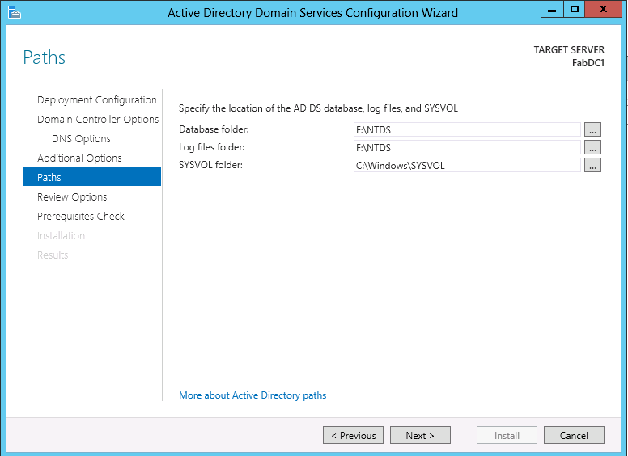
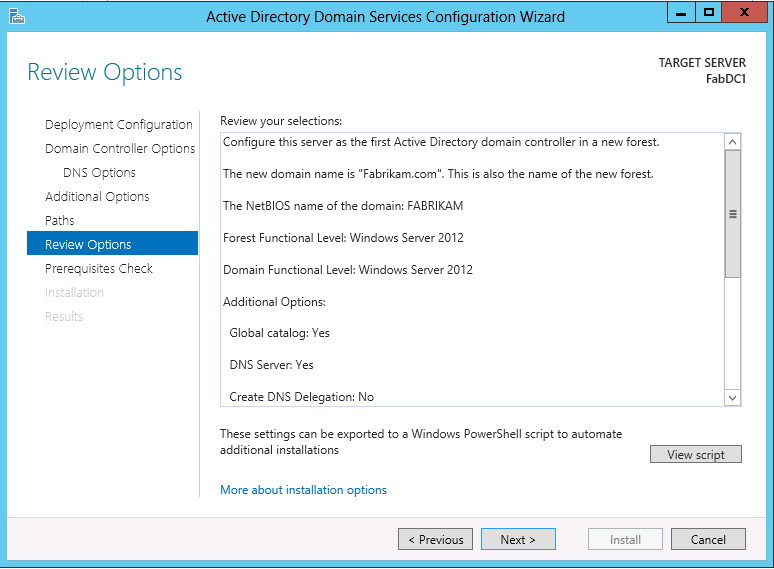
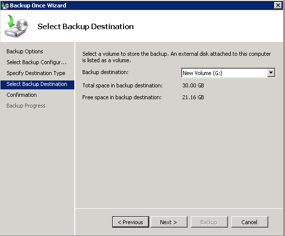

Before you install Active Directory Domain Services (AD DS) on a Windows Azure virtual machine, you need to create a virtual network using one of the following options:
You can create the first VM either by using the Windows Azure management portal or by using Windows Azure PowerShell.
Create a storage account that is in the same region as the affinity group. To check the region of the affinity group, click Networks, and click Affinity Groups. To create a storage account:
a. Click Data Services *, click *Storage, and then click Quick Create.
b. Under URL: type the name of the storage account, and for Region/Affinity Group, select the region of the affinity group, such as West US. By selecting a region for the storage account, it can be used with any affinity group in the virtual network.
Install Windows Azure PowerShell. The VM where you plan to install AD DS must be created using Windows Azure PowerShell in order for the DNS client settings of the domain controller to persist after service healing. The installation of Windows Azure PowerShell requires the installation of Microsoft .NET Framework 4.5 and Windows Management Framework 3.0. If they are not already installed, your computer will need to restart to complete their installation.
a. Go to https://www.windowsazure.com/en-us/.
b. Click Downloads, click Command-line tools, then click Windows Azure PowerShell.
c. Click Run. Click Yes if prompted by the User Account Control dialog.
d. Click Install to go through installation wizard, click I accept, and when the wizard is done, click Finish.
e. Click Exit to close the Web Platform Installer 4.0.
If you are running Windows 7, click Start, click All Programs, click Windows Azure, right-click Windows Azure PowerShell, and click Run as Administrator. Click Yes if prompted by the User Account Control dialog. If you are running Windows 8, click Start, and in the Search field, type Windows Azure PowerShell and press ENTER.
In Windows Azure PowerShell, run the following cmdlet, and then type Y to finish the command:
Set-ExecutionPolicy RemoteSigned
Run the following cmdlet:
Import-Module 'C:\Program Files (x86)\Microsoft SDKs\Windows Azure\PowerShell\Azure\Azure.psd1'
Run the following cmdlet:
Get-AzurePublishSettingsFile
You will be prompted to sign on to the Windows Azure portal and then prompted to save a .publishsettings file. Save the file in a directory, for example, E:\PowerShell\MyAccount.publishsettings. To subsequently run any other Windows Azure PowerShell cmdlets, steps 4 through 6 do not need to be repeated because they only need to be completed once.
Run the following cmdlet to open Windows Azure PowerShell ISE:
powershell ise
Paste the following script into Windows Azure PowerShell ISE, replacing the placeholders (such as subscriptionname) with your own values, and the run the script. If necessary, click Networks in the Management Portal to obtain the subscription name. The storage account name is the name you specified in step 1. The image name used in following script installs Windows Server 2012, but the image names are updated periodically. To get a list of currently available images, run Get-AzureVMImage. Windows Azure Virtual Networks support the virtualized domain controller safeguards that are present beginning with Windows Server 2012. For more information about virtualized domain controller safeguards, see Introduction to Active Directory Domain Services (AD DS) Virtualization (Level 100).
cls
Import-Module "C:\Program Files (x86)\Microsoft SDKs\Windows Azure\PowerShell\Azure\Azure.psd1"
Import-AzurePublishSettingsFile 'C:\PowerShell\Justinha001.publishsettings'
Set-AzureSubscription -SubscriptionName 'Networking Demo Subscription' -CurrentStorageAccount 'yourstorageaccount'
Select-AzureSubscription -SubscriptionName 'Networking Demo Subscription'
#Deploy the Domain Controller in a virtual network
#-------------------------------------------------
#Specify my DC's DNS IP (127.0.0.1)
$myDNS = New-AzureDNS -Name 'myDNS' -IPAddress '127.0.0.1'
$vmname = 'ContosoDC1'
# OS Image to Use
$image = 'a699494373c04fc0bc8f2bb1389d6106__Windows-Server-2012-Datacenter-201306.01-en.us-127GB.vhd'
$service = 'ConDC1demosvc'
$AG = 'YourAffinityGroup'
$vnet = 'YourVirtualNetwork'
#VM Configuration
$MyDC = New-AzureVMConfig -name $vmname -InstanceSize 'Small' -ImageName $image |
Add-AzureProvisioningConfig -Windows -Password P@$$w0rd |
Set-AzureSubnet -SubnetNames 'BackEndSubnet'
New-AzureVM -ServiceName $service -VMs $MyDC -AffinityGroup $AG -DnsSettings $myDNS -VNetName $vnet
If you rerun the script, you need to supply a unique value for $service. You can run Test-AzureName –Service service name, which returns if the name is already taken. After the Windows Azure PowerShell cmdlet successfully completes, the VM will initially appear in the UI in the management portal in a stopped state, followed by a provisioning process. After the VM is provisioned, continue with the next steps.
In the management portal, click the name of the VM you created, and on the bottom of the screen, click Attach, and click Attach Empty Disk.
Type the size of hard disk (in GB) you want, such as 30.

Repeat steps 9 and 10 to attach a second disk.
Click the name of the VM and click Connect.

Click Open.

In RDP connection dialog, click Don’t ask me again for connections to this computer, and click Connect.

Type your credentials using the format VM Name\AdminUserName. If you provisioned the VM by using Windows Azure PowerShell, type VM Name\Administrator.

In Remote Desktop Connection, click Yes.

Initialize the disk you attached to the VM and create a new volume to store Active Directory files.
a. In Server Manager, click File and Storage Services.
b. Click Disks, right-click the disk you attached, click Initialize, and click Yes to confirm the operation.
c. After initialization is complete, right-click the disk, click New Volume. Accept the default values in the New Volume Wizard and finish creating the volume, and then create a new folder named NTDS in order to store the Active Directory database and log files.
In Server Manager, click Manage and click Add Roles and Features to start the Add Roles Wizard. For more information about installing AD DS on Windows Server 2012, see Install Active Directory Domain Services (Level 100).

On the Before you begin page, click Next.
On the Select installation type page, click Role-based or feature-based installation and then click Next.

On the Select destination server page, click Select a server from the server pool, click the name of the server and then click Next.

On the Select server roles page, click Active Directory Domain Services, then on the Add Roles and Features Wizard dialog box, click Add Features, and then click Next.


On the Select features page, select any additional features you want to install and click Next.

On the Active Directory Domain Services page, review the information and then click Next.
On the Confirm installation selections page, click Install.

On the Results page, verify that the installation succeeded, and click Promote this server to a domain controller to start the Active Directory Domain Services Configuration Wizard.

Note: If you close Add Roles Wizard at this point without starting the Active Directory Domain Services Configuration Wizard, you can restart it by clicking Tasks in Server Manager.
On the Deployment Configuration page, click Add a new forest and then type the name of the root domain (for example, fabrikam.com) and click Next.

On the Domain Controller Options page, type and confirm the Directory Services Restore Mode password, accept other default values and click Next.

On the DNS Options page (which appears only if you install a DNS server), click Create DNS delegation as needed and then click Next. If you do, provide credentials that have permission to create DNS delegation records in the parent DNS zone. If a DNS server that hosts the parent zone cannot be contacted, the Create DNS delegation option is not available.
On the Additional Options page, type a new NetBIOS name or verify the default NetBIOS name of the domain, and then click Next.

On the Paths page, type or browse to the locations for the Active Directory database, log files, and SYSVOL folder, and click Next.

On the Review Options page, confirm your selections, review the selections, and then click Next.

On the Prerequisites Check page, confirm that prerequisite validation completed and then click Install.

On the Results page, verify that the server was successfully configured as a domain controller. The server will be restarted automatically to complete the AD DS installation.
Connect to the VM.
In Server Manager, click Add Roles and Features, and on the Select Features page, select Windows Server Backup. Follow the instructions to install Windows Server Backup.
Click Start, click Administrative Tools, click Windows Server Backup, then click Backup once.
Click Different options, then click Next.
Click Full Server, then click Next.
Click Local drives, then click Next.
Select the destination drive that does not host the operating system files or the Active Directory database, then click Next.

Confirm the settings you selected and then click Backup.
After the DC is configured, you can either create VMs using the management portal or you can run the following Windows PowerShell script to provision additional virtual machines and have them automatically join the domain when they are provisioned. The DNS client resolver settings for the VMs can be configured when the VMs are provisioned.
If you create VMs using the management portal, specify the Internal IP address of the domain controller as the Preferred DNS server in the the DNS client resolver settings. To determine the Internal IP address of the domain controller, click the name of virtual machine where it is running.
If you rerun the script, you need to supply a unique value for $service. You can run Test-AzureName –Service , which returns if the name is already taken. After the Windows Azure PowerShell cmdlet successfully completes, the VMs will initially appear in the UI in the management portal in a stopped state, followed by a provisioning process. After the VMs are provisioned, you can log on to them.